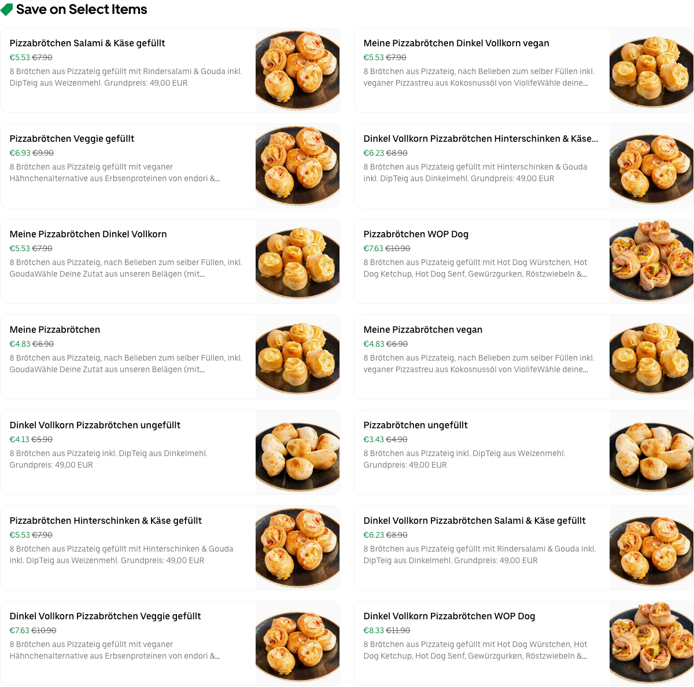
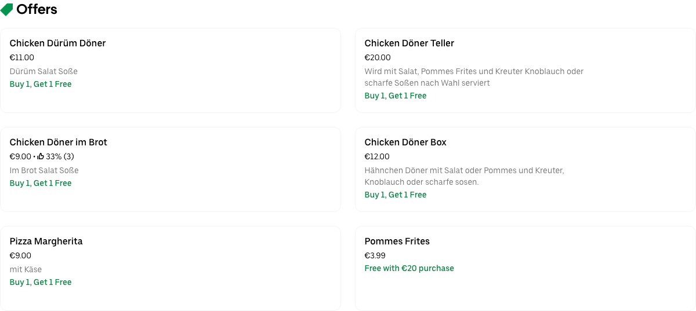
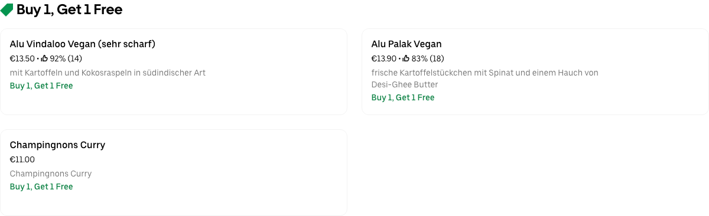
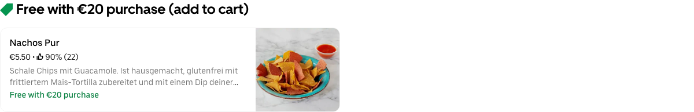
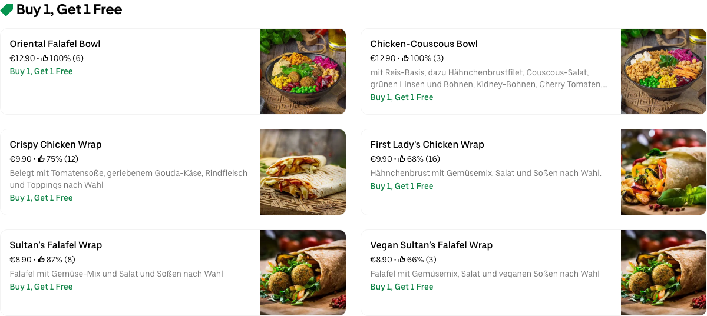
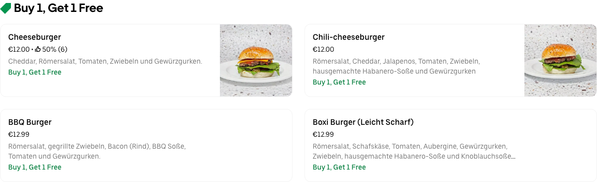
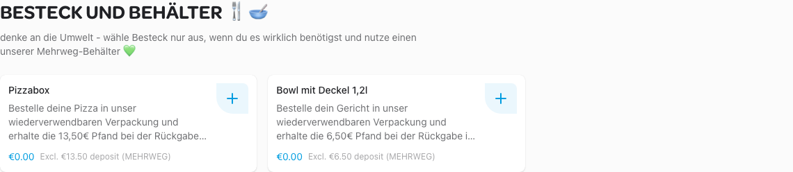

burgerme Berlin Rummelsburg

Schnitzery Kreuzberg

World of Pizza Friedrichshain
Loco Chicken Friedrichshain

Shu Shu Chinese BBQ

Subway Ring Center II

Aigo Korean Food

Crispy's Chicken 🍗🐔 Friedrichshain

The Hummus Club

City Chicken Nahas 1993 - Sonnenallee

Özen Grill
Inderheld ShahJahan Indisches Restaurant
Sushi Moto

Maison Viet Kreuzberg

Machete Burrito
WRAPUBLIC
Boxi Burger
Sushi Yana-Friedrichshain

Ali Baba Libanesische Küche

Tabibito

Hühnerhaus36

Burgeramt Imbiss

Chay Village Friedrichshain

HaiCoffee

Angry Chicken - Mitte

Kebap with Attitude

Marthas Delicious Burgers

Cicer - The World of Chickpea

Angry Chicken - Mitte
Grindhouse Burgers Kreuzberg

Chicken Buzz X-Berg

NYOM Restaurant

BBI - BerlinBurgerInternational

Caphe HOA

Angry Chicken Kreuzberg

Beyond Ramen

Mikoto Sushi - Kreuzberg

Piri's Chicken

Adana Grillhaus

Silom - Bangkok Street Food

Angry Chicken Kreuzberg
Spaccanapoli Nr 12
WEN CHENG 3 - HAND PULLED NOODLES

Goldies Smashburger Gruenberger

McDonald's - Sonntagstr.

Mmaah Korean BBQ Express - Friedrichshain

{{lieferando}}